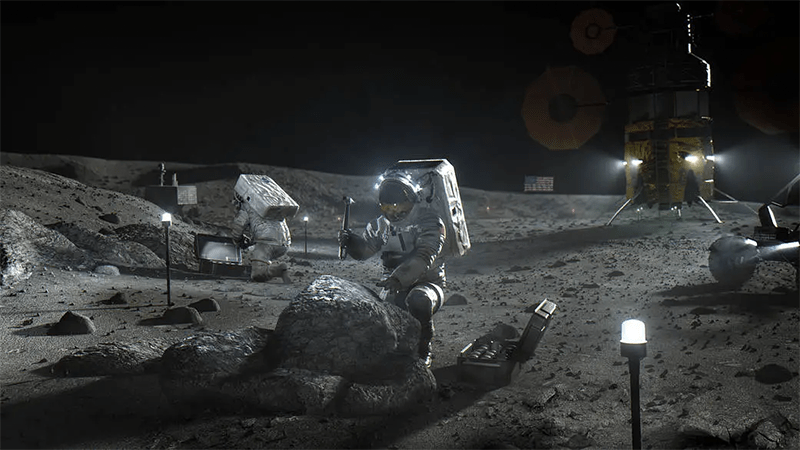
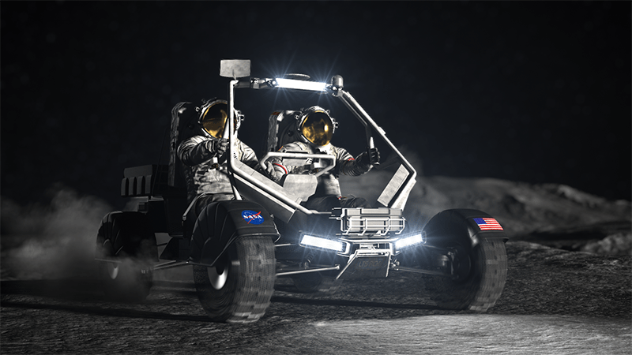
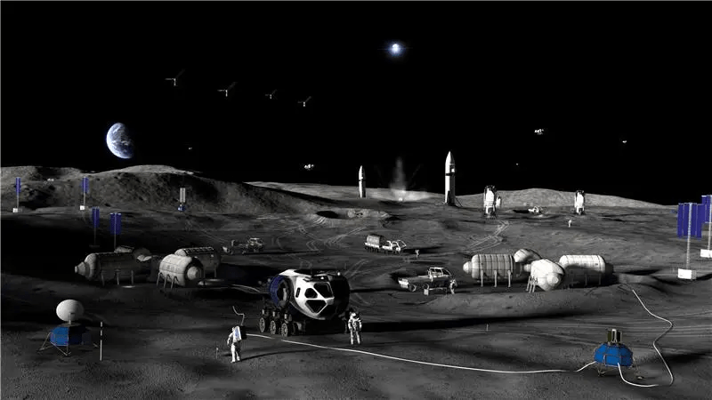

The Artemis II Orion spacecraft will splash down shortly after 8 p.m. EDT tonight, capping off our first trip to the moon in half a century. While this will mark the end of the Artemis II mission, the Artemis program will continue. Here’s what we have to look forward to as we intensify our exploration of Earth’s only satellite.
The good news is that Artemis III is currently scheduled for a mid-2027 launch. The bad news is that the original plan to carry astronauts back to the lunar surface for the first time since Apollo 17 in 1972 has been scrapped. Instead, Artemis III will more closely resemble the Apollo 9 mission in 1969, when astronauts tested the docking procedure and systems between the command service module and lunar module.
More specifically, Artemis III astronauts will enter low earth orbit and practice docking with a Human Landing System (HLS) that will ferry astronauts from lunar orbit to the surface of the moon and back to the Orion spacecraft during a later mission. Which Human Landing System will get the honors—Elon Musk’s SpaceX’s Starship HLS or Jeff Bezos’s Blue Origin Blue Moon Mark 2—is still up in the air. In fact, NASA hasn’t ruled out testing both landing systems during the Artemis III mission, so we may get to see the competition unfold in real time.

NEXT STOP, THE MOON: These artists’ conceptions show, on the left, a SpaceX HLS on the moon with the Earth in the sky behind it, and, on the right, a Blue Origin Blue Moon HLS with an astronaut working next to it. It’s unsure which will be chosen for a future moon mission. Courtesy of NASA.
From there, it’s on to Artemis IV. Scheduled for early 2028, the Artemis IV mission will actually land humans on the moon again, including the first woman to ever set foot on the lunar surface. The mission will begin by launching the Human Landing System into orbit around the moon, followed by the Orion spacecraft crewed by four astronauts. Once they reach lunar orbit, the spacecraft will dock, and two astronauts will transfer to the HLS to descend to the moon. There, they’ll conduct scientific experiments and explore a region of the lunar surface that’s entirely new to us.
Read more: “The Best Photos of the Artemis II Mission (So Far)”

HOME SWEET MOON: This illustration shows astronauts performing research on the moon’s surface. Courtesy of NASA.
Where are they going? As of now the plan is to explore the moon’s south pole, in part because there’s evidence of ice there. “The moon’s south pole is a completely different environment than where we landed during the Apollo missions,” Artemis lunar science lead Sarah Noble said in a 2024 statement. “It offers access to some of the moon’s oldest terrain, as well as cold, shadowed regions that may contain water and other compounds.” A specific landing site near the south pole hasn’t been selected yet, but there are nine current candidates.
After we touch down on the moon again, we’re scheduled to go back later in 2028 for Artemis V. Although the specifics of the mission are still somewhat hazy, the current plan is to use the mission to begin the construction of a moon base—and also tool around in a Lunar Terrain Vehicle, an upgrade to the lunar rover first used during Apollo 15.

MOON BUGGY 2.0: Astronauts on the moon will need a way to get around. This artist’s conception gives you a good idea of what this next moon transport might look like. Courtesy of NASA.
Following Artemis V, NASA plans to shift focus toward creating a more permanent lunar presence. Phase One of the plan involves moving from “bespoke, infrequent missions” to a “repeatable modular” approach, NASA Administrator Jared Isaacman said in a statement. With hopes of sending crews every six months, equipment including power generators, rovers, and scientific instruments could be shipped to the moon, followed by semi-habitable infrastructure in Phase Two, and heavier, more permanent structures in Phase Three.

HARD AT WORK: The eventual aim of the Artemis missions is to establish a permanent presence on and around the moon. This artist’s conception shows what that might look like. Courtesy of NASA.
It’s an ambitious plan, and one that’s contingent on international cooperation, ongoing funding, and the collective will to continue human exploration of the moon. But after making one small step again, how can we resist making one giant leap? 
Enjoying Nautilus? Subscribe to our free newsletter.
Lead image: NASA